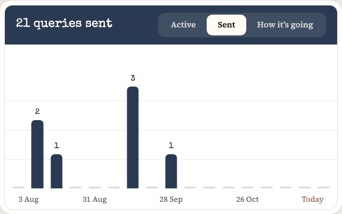
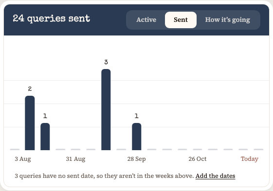
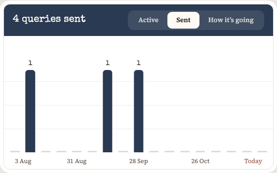
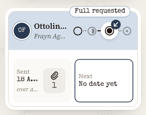
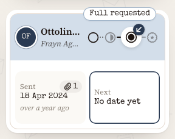
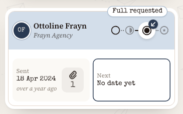
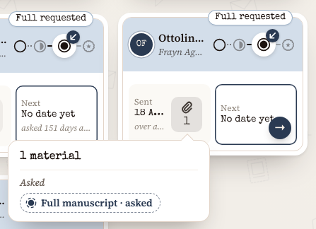
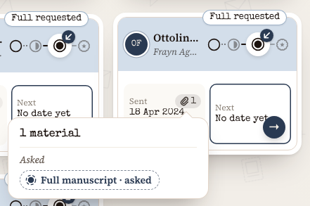
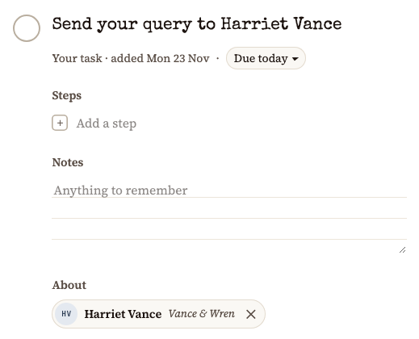
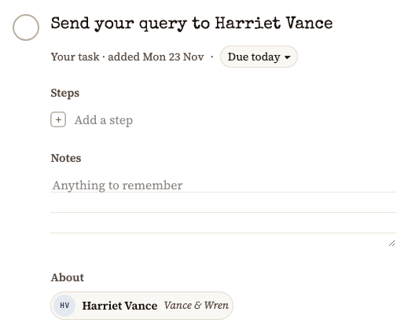

Log a query v2.3 — before and after
Base: dev line …-pc3-laq22-qc168 (93fb01e24). After: branch log-a-query-v2-3. Every frame is the emulator's harness account, taken by tests/e2e/laqV23shots.measure.ts on both builds.
1 · The Dashboard's Sent card, with three undated queries (24 on the book)
Before: 21 queries sent, and nothing about the three. After: 24, the weeks unchanged, and one line under them with the link.


2 · The Dashboard's Sent card, no undated queries
No line: the card is as it was.


3 · A narrow card at 1280 (268px)
Before: the 44 × 50 tile cut the date short. After: the paperclip and count on the "Sent" line; the date and the line beneath run the full width.


4 · A wide card at 1512 (345px)
Unchanged: the 44 × 50 tile as built.


5 · The pop-up from the narrow card's tile (1280)


6 · The held task on the To-do page
Before: the title is a field and the agent has an unlink. After: the words are fixed and there is no unlink; ticking, the date, steps and notes are as before.

